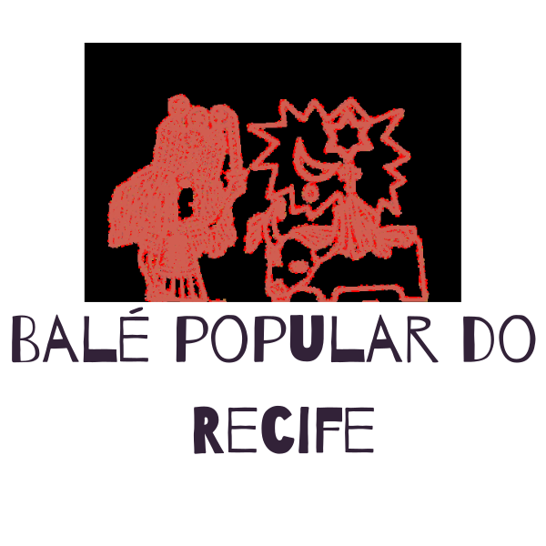
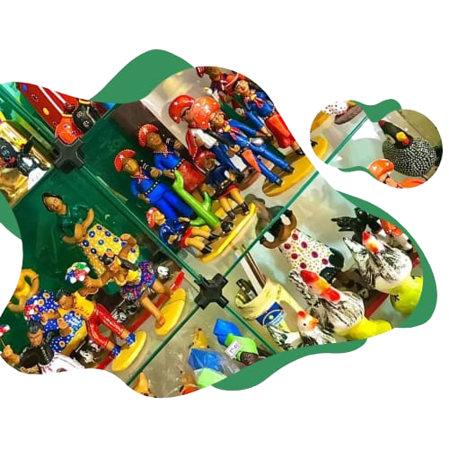
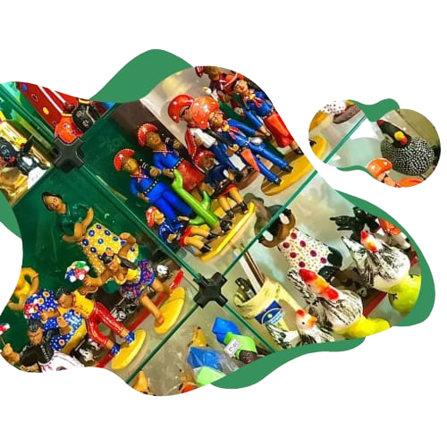
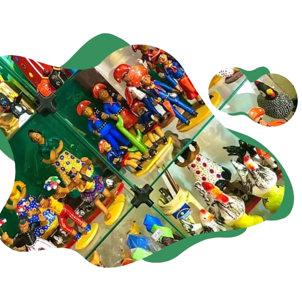
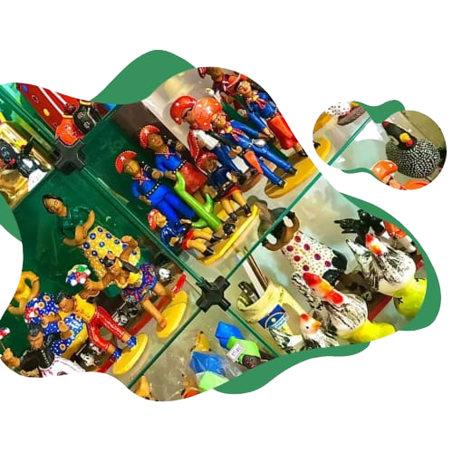

 



PROGRAMAÇÃO
SOBRE O BALÉ
O Balé Popular do Recife foi fundado em maio de 1977, quando
André Madureira, então diretor do grupo teatral "Gente da
gente", se juntou ao então secretário municipal de Educação e
Cultura do Recife Ariano Suassuna, para criar um trabalho
experimental com danças e folguedos populares.
O grupo tem como proposta e objetivo documentar, divulgar, ensinar,
preservar e
recriar os autos e folguedos nordestinos populares, levando assim
a cultura pernambucana aos mais distantes locais do planeta.
O
balé popular chegou a fazer sucesso em Israel, Portugal Espanha,
França,
Holanda, Costa do Marfim, Cuba, Canadá, Estados Unidos, Peru
Argentina, China e Venezuela.
NOTÍCIAS

HORÁRIO DE FUNCIONAMENTO
Segunda a quarta
Das 09:00h ás 18:00h
Quinta a sexta
Das 09:00h ás 20:00h
Temos oficinas de dança basílica Confecção de fantasias e aluguel Loja de artesanato